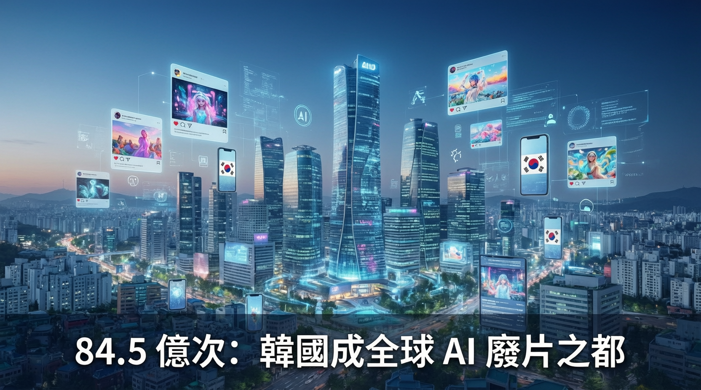

每月AI支出超越Netflix、政治人物Deepfake氾濫，卻僅16%民眾感到擔憂

韓國以 84.5 億次累計觀看量成為全球「AI 廢片」（AI Slop）之冠，每月生成式 AI 支出達 5,830 萬美元，超越 Netflix 訂閱費用。然而在 AI 偽造影片、Deepfake 性犯罪、假新聞氾濫等亂象之下，韓國人對 AI 的樂觀態度卻冠絕全球——僅 16% 受訪者表示擔憂，遠低於美國的 50%。
一段 5 秒的「韓國棒球女神」AI 合成影片，騙過數百萬觀眾並引發廣泛傳播。事件揭示韓國「AI 廢片」問題的冰山一角。根據 Kapwing 報告，韓國的 AI 生成低質量內容 YouTube 頻道累計觀看量達 84.5 億次，遠超排名第二的巴基斯坦（53 億次）和美國（34 億次）。
韓國的例子顯示，當一個社會對技術進步有根深蒂固的信任，監管的鬆懈與 AI 亂象的危害會被集體忽略。全球首部 AI 基本法落地後，執法仍如「打地鼠」，說明法律框架遠遠追不上技術擴散速度。
韓國 YouTube 頻道累計 84.5 億次 AI 廢片觀看，居全球之冠，遠超巴基斯坦和美國。
每月 AI 訂閱支出 5,830 萬美元，已超越 Netflix 等串流服務總和。
2026 年 1 月生效的《人工智能發展與建立信任基本法》要求強制標示 AI 內容，但執法困難。
害怕被排除在 AI 熱潮之外，成為推動韓國人踴躍使用 AI 的核心心理因素。
| 指標 | 韓國 | 美國 | 臺灣（參考） |
|---|---|---|---|
| AI 使用率（2026 Q1） | 37.1% | 較低 | — |
| 對 AI 感到擔憂比例 | 16% | 50% | — |
| AI 廢片觀看量 | 84.5 億次 | 34 億次 | — |
| 年度 AI 總支出 | 約 1 兆韓元 | — | — |
「人們會覺得如果我不學會怎麼用這個，而大家都用過了，那我就會被排除在外。」
— Sejin Kim，韓國創新與競爭力中心主任韓國正以驚人速度演繹 AI 社會化的可能劇本——技術滲透率冠絕全球，但監管框架與社會準備嚴重滯後。在李在明政府將 AI 定為經濟未來基石的政策支援下，韓國將繼續作為全球最具參考價值的「AI 社會實驗場」。